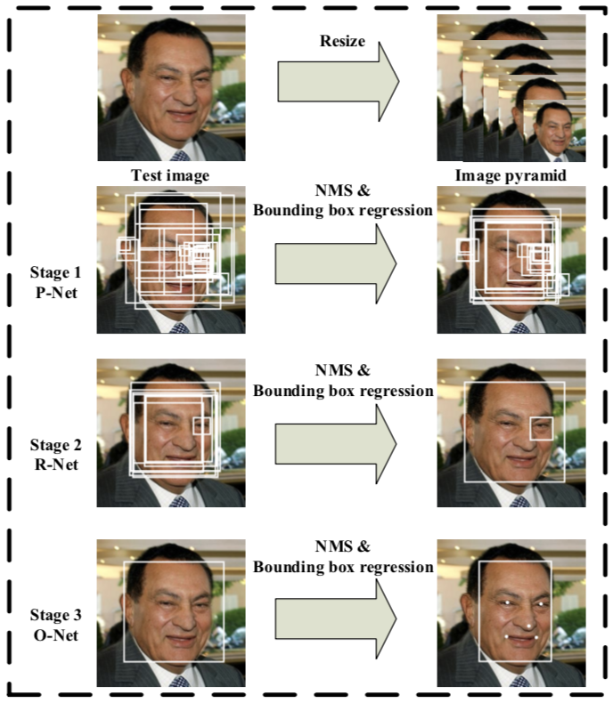
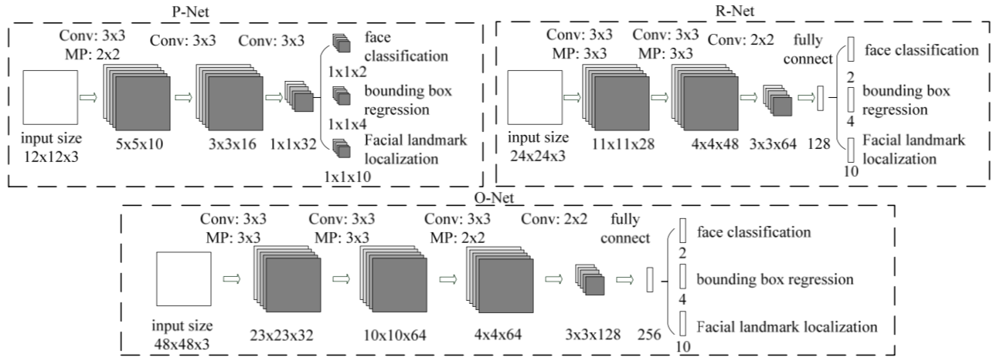

论文题目：《Joint Face Detection and Alignment using Multi-task Cascaded Convolutional Networks》
论文链接：https://arxiv.org/abs/1604.02878
官方代码链接：https://github.com/kpzhang93/MTCNN_face_detection_alignment
其他代码链接：https://github.com/YYuanAnyVision/mxnet_mtcnn_face_detection
其他代码链接：https://github.com/Seanlinx/mtcnn
摘要
传统的人脸检测和人脸对齐任务忽略了它们之间固有的联系而各自分析，这样在本文作者看来是不可取的。本文提出了采用深度级联多任务网络（MTCNN）同时解决检测和对齐任务。MTCNN网络包含三个阶段的卷积网络（Proposal Network、Refine Network、Output Network）用来检测人脸和检测关键点位置。另外，本文提出一种Online hard sample mining strategy极大提高了算法在实践中的速度。
网络结构

首先把图像resize成不同尺度的图像金字塔作为网络的输入；
- Stage 1: Proposal Network, P-Net
获得人脸的候选窗口和候选框的回归向量，然后候选框依据估计的边框回归向量进行校准，最后利用Non-maximum suppression(NMS)归并重叠范围比较大的候选框。 - Stage 2: Refine Network, R-Net
将第一阶段产生的候选框输入到R-Net，筛选掉大量的非人脸候选框，并且使用边框回归向量进行校准，利用NMS进行归并； - Stage 3: Output Network, O-Net
与第二阶段相似，增加了输出5个人脸关键点位置。

训练
与网络的三阶段对应，MTCNN训练过程可以考虑三个阶段的损失，分别是人脸/非人脸二分类、边框回归、面部关键点位置。
人脸识别
这是个二分类问题，对于每一个样本$x_i$，$p_i$是样本$x_i$为人脸的概率，真实标签$y_i^{det}\in {\lbrace 0,1\rbrace}$则采用交叉熵损失函数：边框回归
采用欧式距离损失（L2 Loss）,最小化生成的边框坐标与真实边框坐标的欧式距离。对于每个样本$x_i$，$\hat y_i^{box}$表示其回归生成的边框坐标，$y_{i}^{b o x}$是真实的边框坐标。人脸关键点位置
与边框回归相似，最小化回归生成的关键点坐标$\widehat{y}_{i}^{l a n d m a r k}$与真实的关键点坐标$y_{i}^{l a n d m a r k}$的欧式距离。$\widehat{y}_{i}^{l a n d m a r k}$代表左右眼睛/鼻子/左右嘴巴角的坐标，共10维向量。Three Tasks’ loss Sum
在实践中对于每个阶段的网络都定义总的损失函数同时计算三种损失，这样不至于在求一种损失时，另外两种损失为零。作者在文章中提出在P-Net和R-Net中使用（$\alpha _{det}=1,\alpha_{box}=0.5,\alpha _{landmark}=0.5$）而在O-Net中使用（$\alpha _{det}=1,\alpha_{box}=0.5,\alpha _{landmark}=1$）这说明每个阶段的训练目标有所差异，在P-Net和R-Net中主要是检测人脸和产生边框，O-Net主要是产生关键点位置。Online Hard Sample mining
传统的人脸二分类最小化误差时，是对每个样本都进行反向误差传播，这样计算量比较大。本文提出一种新的方法来解决人脸识别在线应用问题。
对于每一个mini-batch前向传播产生的loss进行降序排序，从全部的sample中挑选出Top 70%作为hard sample，然后在反向传播中仅仅计算这些hard sample产生的梯度。